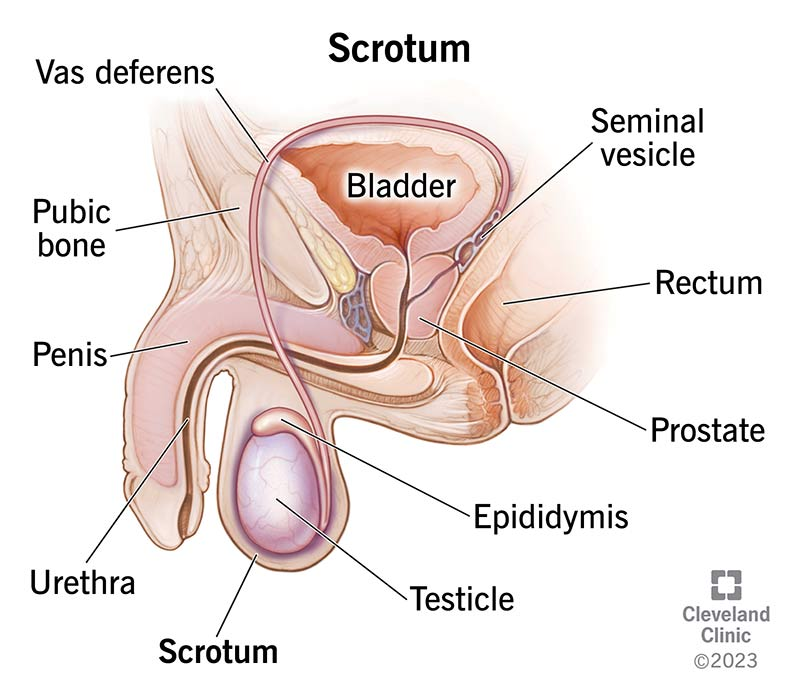

What are the parts of the scrotum?

Your scrotum is divided into two parts by a crease called the perineal raphe. This crease looks like a line down the center of your scrotum. The perineal raphe joins your internal septum with your scrotum. The scrotal septum divides the scrotal sac into two parts. Each side of your scrotum contains the following
- Testicle. Your testicles produce and release (secrete) hormones like testosterone. They also contain tiny tubes and cells called spermatozoa that produce sperm. Sperm move from your testicles to your epididymis
- Epididymis. Your epididymides (plural of epididymis) are located at the top of each testicle. Each is a tightly coiled tube that stores sperm until they’re mature. Your epididymides also absorb excess fluid released by your testicles to help move the sperm through your reproductive tract.
- Spermatic cord. Your spermatic cords contain lymph vessels, nerves and blood vessels. They also contain a tube called the vas deferens that moves sperm out of your epididymis into your ejaculatory ducts. Your vas deferens is surrounded by your spermatic cord and transports mature sperm to the urethra before you ejaculate.
- Cremaster muscle. Your cremaster muscles surround your testicles and spermatic cords. This muscle helps move your testicles away from and toward your body to maintain the ideal temperature for producing sperm.
How big is the scrotum?
The average thickness of the scrotum is about 8 mm (millimeters).
What is the scrotum made of?
Your scrotum is a smooth sac made of skin and muscle. It has a parietal layer and a visceral layer. The parietal layer covers the inner part of the scrotal wall. The visceral layer coats your testicles and epididymis.